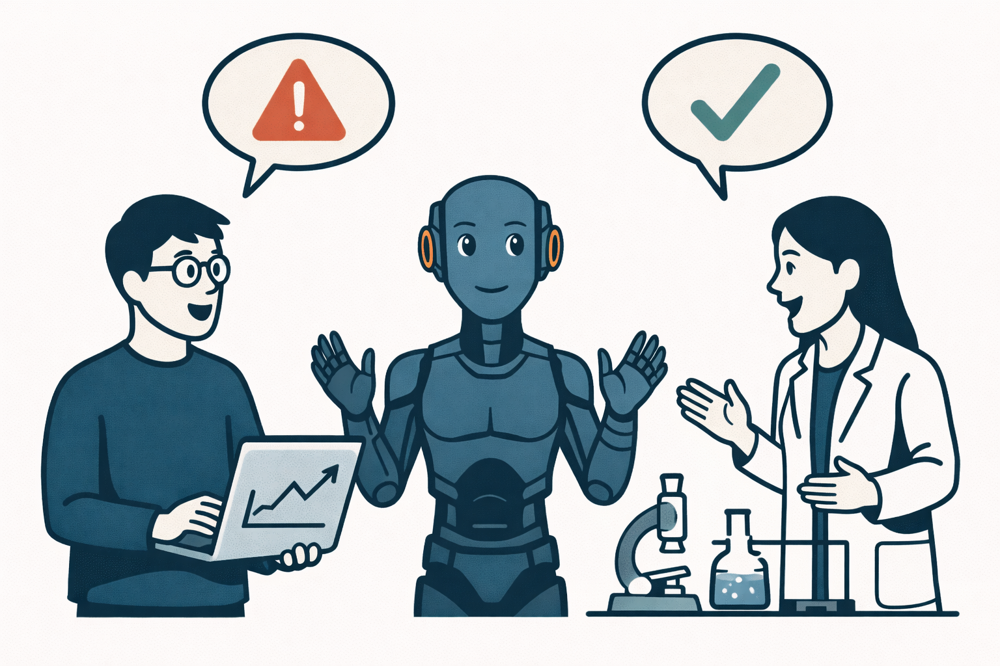
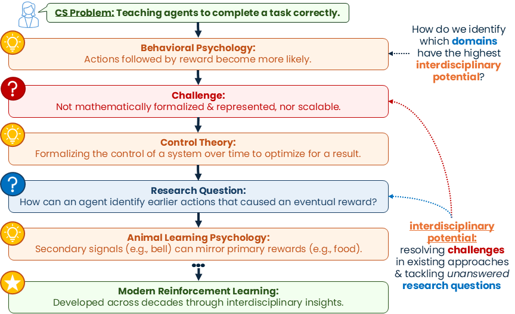
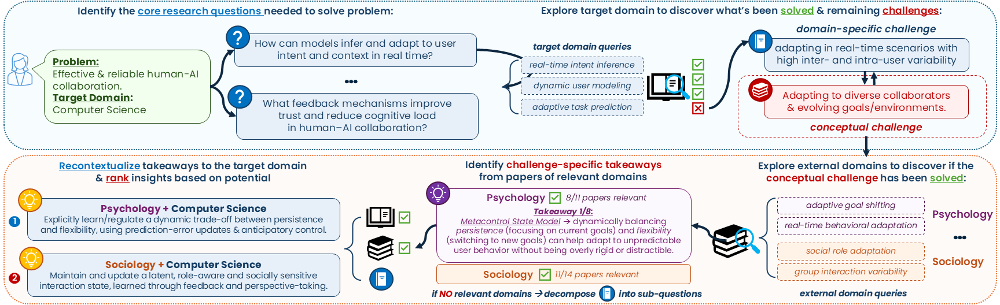
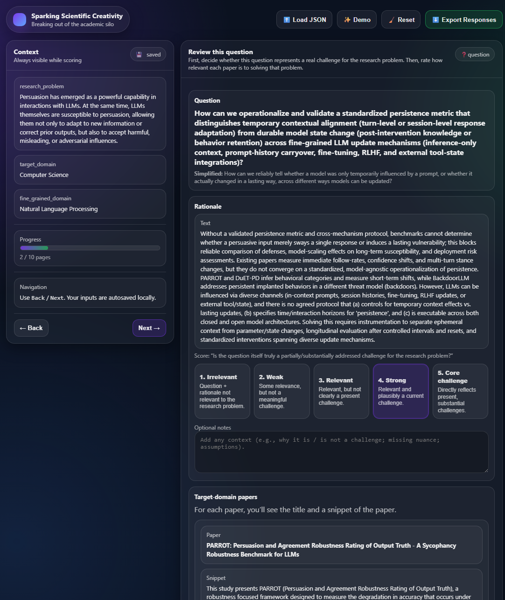
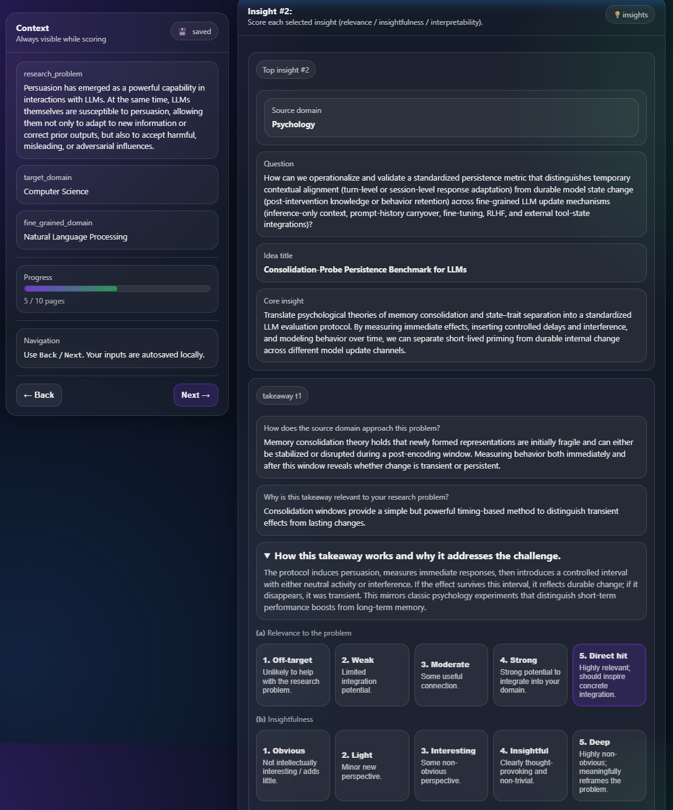
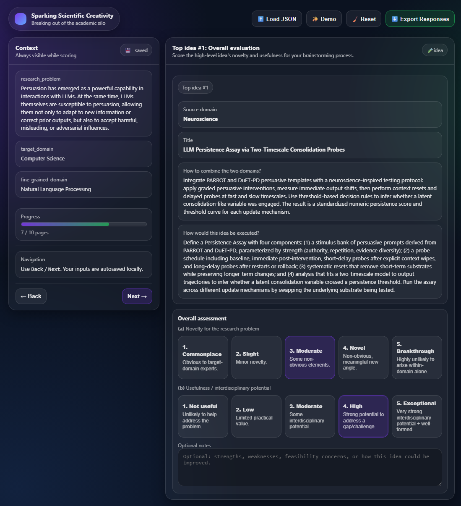

+21%
Novelty Gain
Average relative improvement over Guided Dual on idea-level novelty.

Idea-CatalystMost AI-for-science systems optimize for fast solution generation. This paper argues that the more important missing layer is the reasoning process behind creative, interdisciplinary ideation. Idea-Catalyst is built for that earlier stage: helping researchers identify where a field is stuck, where adjacent ideas might transfer, and which cross-domain signals are actually worth exploring.

Average relative improvement over Guided Dual on idea-level novelty.
Average relative improvement over Guided Dual on takeaway-level insightfulness.
Dataset coverage spanning a broad set of target-domain research goals.
Extracted cross-domain takeaways used to seed new directions.
Recontextualized idea candidates produced across the benchmark.
The framework is designed around a simple principle: interdisciplinary inspiration should be earned through structured analysis, not guessed through unconstrained retrieval. It operationalizes three metacognitive behaviors from the paper: clarifying research goals, recognizing unresolved challenges, and strategically exploring external domains with high impact potential.
Start with a concrete research goal, then unpack it into target-domain questions, current wins, and unresolved challenges.
Translate a domain-specific obstacle into a portable conceptual challenge that other disciplines might already know how to solve.
Retrieve candidate domains, extract the most relevant takeaways, and rank them by interdisciplinary potential before integrating them back.
Hover a stage above to see what the system is producing, filtering, and carrying forward.
This walkthrough is a simplified reading aid for the paper's framework figure. It keeps the same logic as Figure 2, but makes each stage legible without forcing the reader to parse the entire diagram at once.

Across both takeaway-level and idea-level evaluations, the method consistently beats retrieval-only baselines on the dimensions that matter for exploratory research: insightfulness and novelty. The paper's interpretation is important here: more diverse retrieval alone is not enough. What matters is selecting source domains that offer meaningful conceptual leverage for the target problem.
Idea-Catalyst reaches the strongest takeaway-level insightfulness scores across top-1, top-2, and top-3 comparisons, averaging a 16.22% relative improvement over Guided Dual.
On final integrated ideas, the paper reports a 21.38% average relative novelty gain over Guided Dual and substantially stronger performance than free-form source retrieval.
Removing target-domain decomposition or replacing interdisciplinary potential-based ranking weakens performance, suggesting the gains come from structured reasoning rather than cosmetic rewriting.
Effective interdisciplinary ideation depends not only on increasing domain diversity, but on critically selecting source domains which yield meaningful conceptual insights.
Paraphrased from the paper's analysis of source-domain selection and Figure 4.
Six PhD researchers evaluated the system on their own problems. Generated research questions received a 4.00/5 average score, retrieved literature scored 3.50/5, source-domain takeaways were judged moderately relevant and insightful, and the final ideas were rated more novel than useful, reflecting the common gap between ideation and execution.


